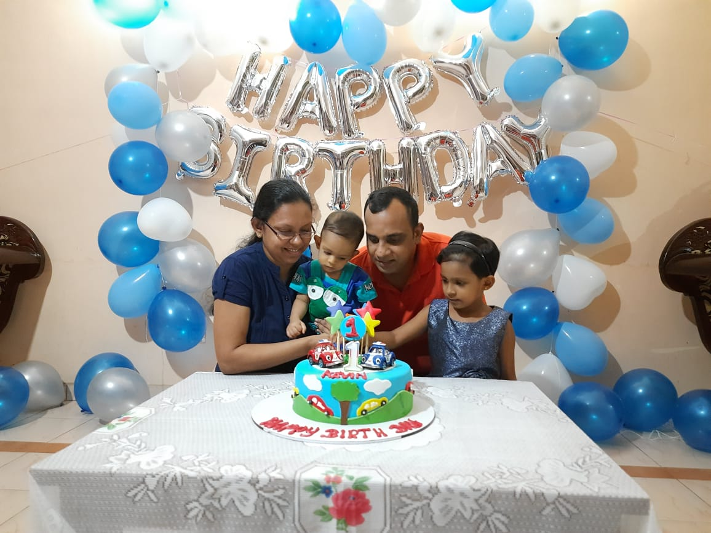

Nuwan Ramanayake

Summary
I'm a hard working person
who is totally enjoying life.
I am running an online store at present.
Programming was what I like since childhood.
Education
- Completed course in Web development with Asp.Net and C# 2013
- University of Glamorgan – Bsc Software Engineering 2009/2011
- 3rd Year Modules
- Computer Operating Systems
- Computer Networks
- Level 3 Project and Dissertation
- 2nd Year Modules
- Event Driven Programming(C#.net)
- Network Architectures and Operating Systems
(command line prompt, Python)
- Object Oriented Software Development (Java)
- Rich Internet Application Development
(HTML, XML, ASP, Flash, PHP)
- Professional Information Systems Development
(Project management)
- Level 2 Project (Group Project-
created the Wisdom Cricket Database- C#.net)
- KWAP (Knowledge Window Asia Pacific) Training center- Singapore 2005/2007
- Diploma in Information and Communications Technology-
Moderated by University of Cambridge International Examinations
- Communication
- Data Management
- Systems Management
- Website Programming
- Advanced Spreadsheets
- Relational Databases
- Advanced Diploma in Computer Studies-
Moderated by University of Sunderland
Professional Experience
- Worked as a Software Engineer at Tess Agro Pvt. Ltd
(2nd May 2014 – October 2016 )
- Working as an IT administrative in Kingswood Digital color lab
(2017- present)
TECHNICAL SKILLS
- Languages :
Python,ASP.Net, C#.Net, CSS, HTML, JavaScript, React
- Reporting Services :
SQL Server Reporting Services, Crystal Reports
- Databases :
MS SQL Server
Other
My Hobbies
Contact-Me